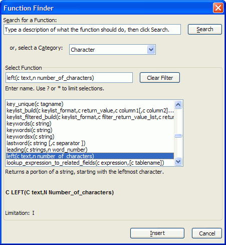

Using the Function Finder
The Function Finder lets you type in a search string to find the right function for the task at hand. It also give you quick access to your most frequently used functions.
You can access the Function Finder by selecting Interactive Window > Script or Code Editor > Code > Insert Function.
